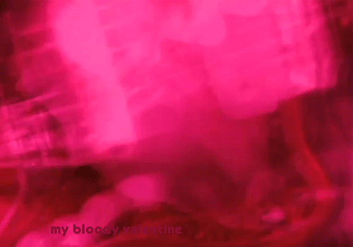

My Bloody Valentine
Is an Irish rock band formed in 1983. There main members consist of Kevin Sheilds (Guitarist, Vocalist, Producer), Calm O Ciosoig (Drums, Samples), Blinda Butcher (Vocals, Guitar), and Debbie Googe (Bass). They are famous for creating the genre Shoegaze, this mixes soft vocals, wall of noise guitars, and sample style drums toghether to create a perfect dreamscape noise
Listen to Loveless by clicking the link or photo